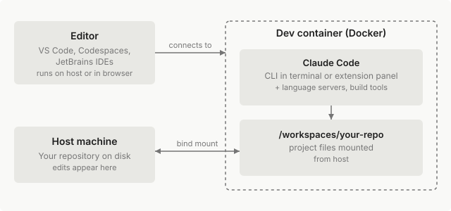

开发容器
在开发容器中运行 Claude Code，为您的团队提供一致、隔离的环境。
开发容器（或 dev container）让您定义一个相同的、隔离的环境，团队中的每个工程师都可以运行。在该容器中安装 Claude Code 后，Claude 运行的命令会在容器内执行，而不是在主机上执行，同时对项目文件的编辑会在您工作时显示在本地存储库中。
本页涵盖在开发容器中安装 Claude Code，然后是一组独立的配置主题：在重建过程中保持身份验证、强制执行组织策略、限制网络出站流量以及无需权限提示即可运行。请阅读与您的设置相匹配的主题。
虽然开发容器提供了实质性的保护，但没有任何系统能够完全免疫所有攻击。
当使用 --dangerously-skip-permissions 执行时，开发容器不会阻止恶意项目泄露容器内可访问的任何内容，包括存储在 ~/.claude 中的 Claude Code 凭证。
仅在使用受信任的存储库进行开发时使用开发容器，并监控 Claude 的活动。
避免将主机密钥（如 ~/.ssh 或云凭证文件）挂载到容器中；优先使用存储库范围或短期令牌。
[accordion] 开发容器如何与您的编辑器配合工作

开发容器作为 Docker 容器运行，可以在您的机器上或云主机（如 GitHub Codespaces）上运行。支持 Dev Containers 规范的编辑器（如 VS Code、GitHub Codespaces、JetBrains IDE 或 Cursor）连接到该容器：您可以像往常一样在编辑器中浏览和编辑文件，但集成终端、语言服务器和构建工具都在容器内运行，而不是在主机上。不支持开发容器的编辑器（如纯 Vim）不属于此工作流。
Claude Code 在容器内运行，因此它看到与项目工具链其余部分相同的文件、依赖项和工具。在 VS Code 中，您可以使用 Claude Code 扩展面板 或在集成终端中运行 claude；两者都在容器内运行并共享相同的 ~/.claude 配置。
在开发容器中添加 Claude Code
Claude Code 通过 Claude Code Dev Container Feature 安装到任何开发容器中。
这些设置适用于任何支持 Dev Containers 规范的工具，如 VS Code、GitHub Codespaces 或 JetBrains IDE。下面的步骤以 VS Code 为例。
当您在 VS Code 或 Codespaces 中打开容器时，该功能还会添加 Claude Code VS Code 扩展；其他编辑器会忽略该部分。
初次接触开发容器？VS Code Dev Containers 教程 会指导您安装 Docker、扩展和打开第一个容器。有关更完整的加固示例（包含防火墙和持久卷），请参阅尝试参考容器。
1. 创建或更新 devcontainer.json
将以下内容保存为存储库中的 .devcontainer/devcontainer.json，或将 features 块添加到现有文件中。
末尾的版本标签（如 :1.0）固定了功能的安装脚本，而不是 Claude Code 版本。该功能安装最新的 Claude Code，Claude Code 默认在容器内自动更新。
要固定 CLI 版本或禁用自动更新，请参阅强制执行组织策略。
{
"image": "mcr.microsoft.com/devcontainers/base:ubuntu",
"features": {
"ghcr.io/anthropics/devcontainer-features/claude-code:1.0": {}
}
}
将 image 行替换为您项目的基础镜像，或如果现有文件使用 Dockerfile，则将其删除。
Claude Code 功能在基础镜像未提供 Node.js 时会自行安装。如果该安装失败且构建停止并显示 Failed to install Node.js and npm，请将 "ghcr.io/devcontainers/features/node:1": {} 添加到上述 features 块中 Claude Code 功能之上，然后重新构建。
2. 重建容器
在 Mac 上使用 Cmd+Shift+P 或在 Windows 和 Linux 上使用 Ctrl+Shift+P 打开 VS Code 命令面板，然后运行 Dev Containers: Rebuild Container。
对于其他工具，请按照该工具的重建操作：参阅 GitHub Codespaces 中的重建、Dev Containers CLI 或您的 IDE 的开发容器文档。
3. 登录 Claude Code
在重建的容器中打开终端并运行 claude，然后按照身份验证提示进行操作。
您在身份验证提示处看到的内容取决于您的提供商：
- Anthropic：通过浏览器使用您的 Claude 或 Anthropic Console 账户登录
- Amazon Bedrock、Google Cloud 的 Agent Platform 或 Microsoft Foundry：Claude Code 使用您的云提供商凭证，无需浏览器提示
对于云提供商，通过 containerEnv、Codespaces 密钥或您的云的工作负载身份将凭证传递到容器中，而不是从主机挂载凭证文件。有关凭证链的详细信息，请参阅 Amazon Bedrock、Google Cloud 的 Agent Platform 或 Microsoft Foundry，Claude Code 会读取这些信息。
请参阅选择您的 API 提供商以决定哪条路径适合您的组织。
对于 Anthropic 登录：如果没有打开浏览器，或者浏览器完成登录后显示 localhost 连接错误，请使用终端粘贴提示上方显示的登录 URL。将其复制到浏览器中并在浏览器中登录，然后将浏览器显示的代码粘贴到该提示处。如果粘贴没有任何反应，请参阅在 WSL2、SSH 或容器中 OAuth 登录失败。
在重建过程中保持身份验证和设置
默认情况下，容器的主目录在重建时会被丢弃，因此工程师必须每次都重新登录。Claude Code 将其身份验证令牌、用户设置和会话历史存储在 ~/.claude 目录下。它将您的账户详细信息、个人 MCP 服务器和按项目信任存储在该目录之外的一个单独文件中：~/.claude.json。
要保留该目录和该文件，请在 ~/.claude 处挂载一个命名卷，并将 CLAUDE_CONFIG_DIR 设置为相同路径，以便 Claude Code 在卷内写入 .claude.json。以下示例为 remoteUser 为 node 的容器挂载卷并设置 CLAUDE_CONFIG_DIR：
"mounts": [
"source=claude-code-config,target=/home/node/.claude,type=volume"
],
"containerEnv": {
"CLAUDE_CONFIG_DIR": "/home/node/.claude"
}
将 /home/node 替换为容器的 remoteUser 的主目录。如果您已经设置了 containerEnv，例如在 Enforce organization policy 中，请将 CLAUDE_CONFIG_DIR 添加到该对象，而不是添加第二个对象。
如果尽管已挂载卷，Claude Code 在每次重建后仍重复首次启动设置，请检查 devcontainer.json 中的 containerEnv 是否将 CLAUDE_CONFIG_DIR 设置为卷的挂载路径。如果没有 CLAUDE_CONFIG_DIR，~/.claude.json 会保留在主目录中，并在重建时连同其中记录的您已完成设置的信息一起被丢弃。
要按项目隔离状态而不是在所有存储库中共享一个卷，请在源名称中包含 ${devcontainerId} 变量。参考配置 为此目的使用 source=claude-code-config-${devcontainerId}。
在 GitHub Codespaces 中，~/.claude 在停止和启动 codespace 时会保持，但在重建容器时仍会被清除，因此上面的配置也适用于此。
要在 codespace 之间进行身份验证，请将 ANTHROPIC_API_KEY 或来自 claude setup-token 的 CLAUDE_CODE_OAUTH_TOKEN 存储为 Codespaces 密钥。Codespaces 会自动将密钥作为环境变量提供给容器内部。
强制执行组织策略
开发容器是应用组织策略的便利场所，因为相同的镜像和配置在每个工程师的机器上运行。
Claude Code 在 Linux 上读取 /etc/claude-code/managed-settings.json 并在设置层次结构中以最高优先级应用它，因此那里的值会覆盖工程师在 ~/.claude 或项目的 .claude/ 目录中设置的任何内容。从您的 Dockerfile 复制文件到位：
RUN mkdir -p /etc/claude-code
COPY managed-settings.json /etc/claude-code/managed-settings.json
因为 Dockerfile 存在于存储库中，任何具有写入权限的人都可以更改或删除此步骤。对于工程师无法通过编辑存储库文件来绕过的策略，请通过服务器管理的设置或您的 MDM 提供托管设置。有关可用的键和其他交付路径，请参阅托管设置文件。
要设置适用于容器中每个 Claude Code 会话的环境变量，请将它们添加到 devcontainer.json 中的 containerEnv。以下示例选择退出遥测和错误报告，并防止 Claude Code 在安装后自动更新：
"containerEnv": {
"CLAUDE_CODE_DISABLE_NONESSENTIAL_TRAFFIC": "1",
"DISABLE_AUTOUPDATER": "1"
}
CLAUDE_CODE_DISABLE_NONESSENTIAL_TRAFFIC 也禁用了远程控制和其他需要功能标志获取的功能所依赖的功能标志评估，因此容器中的会话无法使用它们。
Dev Container Feature 始终安装最新的 Claude Code 版本。要为可重现的构建固定特定的 Claude Code 版本，请从您的 Dockerfile 使用 npm install -g @anthropic-ai/claude-code@X.Y.Z 安装它，而不是使用该功能，并在 containerEnv 中将 DISABLE_AUTOUPDATER 设置为 1。
有关完整的策略控制列表，包括权限规则、工具限制和 MCP 服务器允许列表，请参阅为您的组织设置 Claude Code。
要在容器内提供 MCP 服务器，请在存储库根目录的 .mcp.json 文件中的项目范围定义它们，以便它们与您的开发容器配置一起签入。在您的 Dockerfile 中安装本地 stdio 服务器依赖的任何二进制文件，并将远程服务器域添加到您的网络允许列表。
限制网络出站流量
您可以将容器的出站流量限制为仅 Claude Code 需要的域。有关推理和身份验证域，请参阅网络访问要求，有关可选的遥测和错误报告连接以及如何禁用它们，请参阅遥测服务。
参考容器包含一个 init-firewall.sh 脚本，该脚本限制出站流量仅限于脚本允许的目标。在容器内运行防火墙需要额外的权限，因此参考通过 runArgs 添加 NET_ADMIN 和 NET_RAW 功能。防火墙脚本和这些功能对于 Claude Code 本身不是必需的：您可以将其省略并改为依赖您自己的网络控制。
无需权限提示即可运行
因为容器以非 root 用户身份运行 Claude Code 并将命令执行限制在容器内，您可以传递 --dangerously-skip-permissions 以进行无人值守操作。当以 root 身份启动时，CLI 会拒绝此标志，因此请确认 remoteUser 设置为非 root 账户。
跳过权限提示会移除您在工具调用运行前审查它们的机会。Claude 仍然可以修改绑定挂载的工作区中的任何文件（这直接显示在您的主机上），并访问容器的网络策略允许的任何内容。将此标志与上面的网络出站流量限制配对，以限制绕过的会话可以访问的内容。
如果您想要更少的提示而不禁用安全检查，请考虑改为自动模式，它有一个分类器在运行前审查操作。要完全防止工程师使用 --dangerously-skip-permissions，请在托管设置中将 permissions.disableBypassPermissionsMode 设置为 "disable"。
尝试参考容器
anthropics/claude-code 存储库包含一个示例开发容器，它结合了 CLI、出站防火墙、持久卷和基于 Zsh 的 shell。它作为工作示例而不是维护的基础镜像提供；在将其应用到您自己的配置之前，使用它来查看这些部分如何组合在一起。
1. 安装先决条件
安装 VS Code 和 Dev Containers 扩展。
2. 克隆参考
克隆 Claude Code 存储库 并在 VS Code 中打开它。
3. 在容器中重新打开
出现提示时，点击 Reopen in Container，或从命令面板运行 Dev Containers: Reopen in Container。
4. 启动 Claude Code
容器完成构建后，使用 Ctrl+` 打开终端并运行 claude 以登录并启动您的第一个会话。
要将此配置用于您自己的项目，请将 .devcontainer/ 目录复制到您的存储库中并为您的工具链调整 Dockerfile，或返回在开发容器中添加 Claude Code 以仅将功能添加到您已有的设置中。
参考配置由三个文件组成。当您通过功能将 Claude Code 添加到您自己的开发容器时，这些文件都不是必需的，但它们展示了一种组合这些部分的方式。
| 文件 | 目的 |
|---|---|
devcontainer.json |
卷挂载、runArgs 功能、VS Code 扩展和 containerEnv |
Dockerfile |
基础镜像、开发工具和 Claude Code 安装 |
init-firewall.sh |
限制出站网络流量仅限于脚本允许的目标 |
后续步骤
Claude Code 在您的开发容器中运行后，下面的页面涵盖了组织推出的其余部分：选择身份验证路径、在存储库外交付托管策略、监控使用情况以及了解 Claude Code 存储和发送的内容。
- 为您的组织设置 Claude Code：选择身份验证提供商、决定策略如何到达设备以及规划推出
- 服务器管理的设置：从 claude.ai 管理控制台交付托管策略，以便工程师无法通过编辑存储库文件来绕过它
- 监控使用情况和审计活动：导出 OpenTelemetry 指标并查看您的团队正在运行的内容
- 网络访问要求：代理和防火墙的完整域允许列表
- 遥测服务和选择退出：Claude Code 默认发送的内容以及禁用它的环境变量
- 探索
.claude目录：卷挂载包含的内容，包括凭证、设置和会话历史 - 沙箱环境：比较开发容器与内置 Bash 沙箱、自定义容器和虚拟机
- 安全模型：Claude Code 的权限系统、沙箱和提示注入保护如何组合在一起
- 权限模式：从计划模式到自动模式再到绕过的完整范围，以及何时使用每种模式